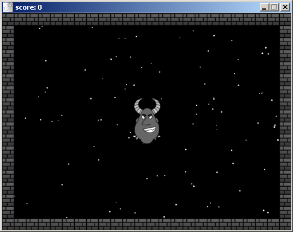
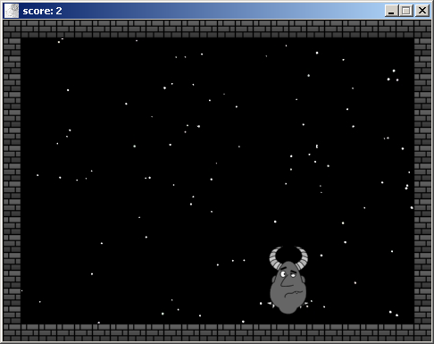
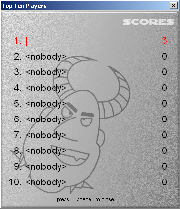
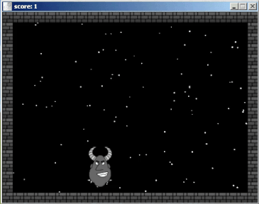

Click the monster (his name is Stan Black) to rack up as much points as possible in this Game Maker 5 game.
Download the game here:
For Microsoft® Windows™ (x86) - File Size: 2.03 MB
 
Back to LTV2008 Games